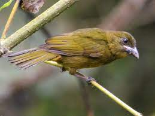

Chlorothraupis stolzmann
The Ochre-breasted Tanager is a bird species in the family Cardinalidae. They are found in Equador and Columbia where it's natural habitats are. They eat mainly fruit, flowers and insects. Sometimes they form mixed flocks with other species.